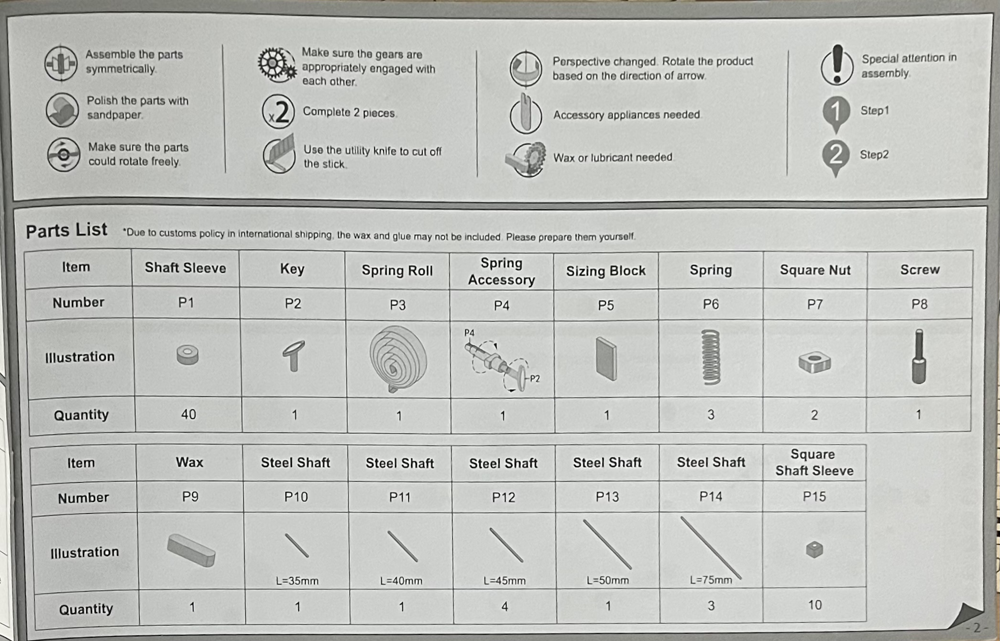
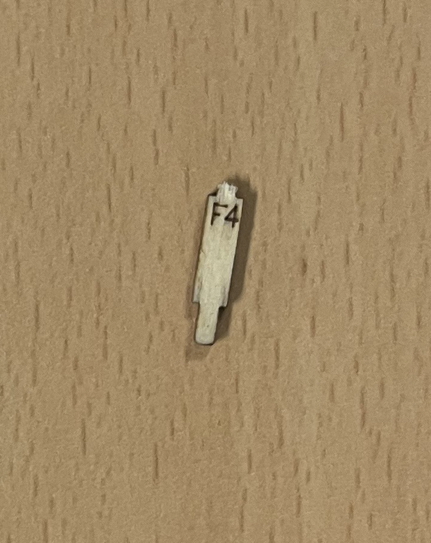
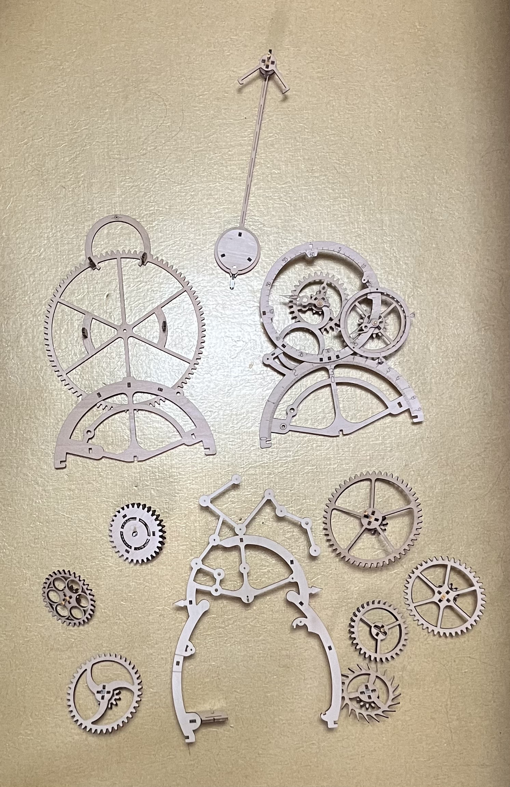
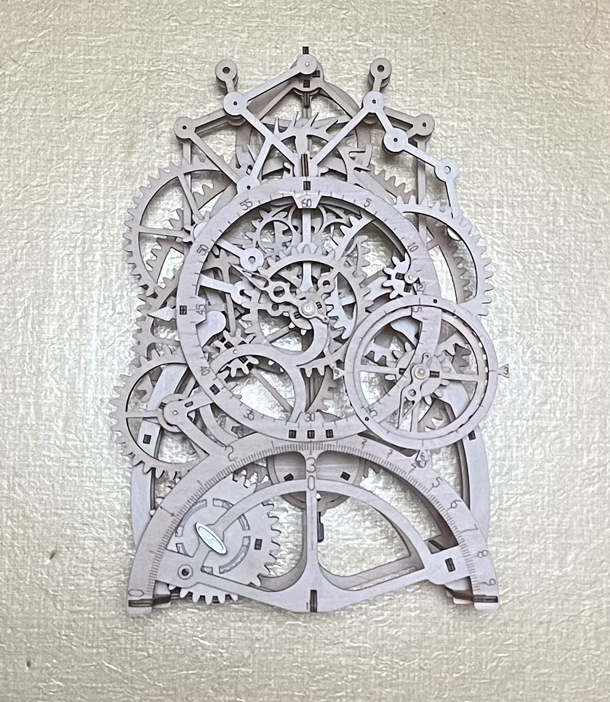

2023.02.15. 첫 작성
우연히 ROKR이라는 회사를 발견하고 새로운 취미를 가지게 되었다.ㅎ
3D퍼즐을 판매하는 곳인데, 뭔가 딱 내 취향에 맞았다..!
내가 제일 처음 구매한 제품은 Pendulum Clock이다. 포장지부터 간지남ㅋㅋ
가격은 약 5만 원이다. 비싼 듯 하면서도 퀄리티를 생각하면 합리적인 것 같기도 하다.
개봉하면 이렇게 들어있다.
assembly instruction과 부품들이 들어있는 모습이다.

instruction 첫 장에 부품들이 설명되어있다. 부품들은 거의 철, 플라스틱, 나무로 이루어져있다.
왼쪽에서 오른쪽, 위에서 아래로 보았을 때 차례대로 A,B,C,D,E,F 부품들이다.
귀엽고 조그만 검정색 사포도 들어있다.ㅋㅋㅋ
얘네는 P부품들이다.
ROKR의 제품들이 디테일한걸로 유명하긴 하지만 진짜 디테일했다 ㄷㄷ
조립해서 만들어야하는, 조립을 위한 부품들이 있다..!
왼쪽 부품은 조그만 shaft sleeve에 steel shaft를 끼울 때 쓰는 것이고,
오른쪽 부품은 왼쪽 부품의 용도 + 길이를 잴 때 쓰는 것이다.
조립을 위한 도구가 처음부터 전부 제공되는 것이 아니라 우리가 직접 만들어야 하는 것도 있다는 게 놀라웠다.
받은 첫 날에 두 시간 걸려서 만든 게 요정도..ㅎ
시간이 늦어 저 정도만 만들고 잤다.
나무 부품들을 도면에서 분리할 때 부서지지 않을까 조심해야 해서 시간이 좀 걸린 것 같다..

다음날은 재훈이 집에서 자서 못 만들었고 다다음날에 기숙사 돌아와서 마저 만들었다.
근데 처음으로 하나 부숴먹었다.. 부품 F4..
하지만? 역시 디테일한 ROKR답게 부숴지기 쉬운 작은 부품들은 여분이 있어서 완성하는데 지장은 없었다.

최종 조립 전 중간점검~ 기어들이 아름답쥬?
근데 기어들의 모양이 다 다른거 보이는가?
조립하다가 깨달은 건데 기어 모양이 같아버리면 나중에 최종 조립할 때
되게 헷갈리니까 배려 차원에서 다르게 만든 것 같다.

드디어 완성~ 손가락이 많이 아픔... 근데 보람은 있다 케케
이거는 시계추를 조립하기 전에 태엽 감고 돌린 모습.
이건 시계추까지 조립한 후에 태엽 감고 돌린 모습.
나는 개인적으로 시계추를 넣기 전이 시원시원하게 잘 돌아가서 더 맘에 든다.ㅋㅋ
아니 근데 영상찍을때 감아놓은 태엽이 이 글 다 쓰는 지금까지도 계속 돌고있음 ㄷㄷ 몇 시간 됐는데 유지력 보소?
2023.02.16. 마지막 수정